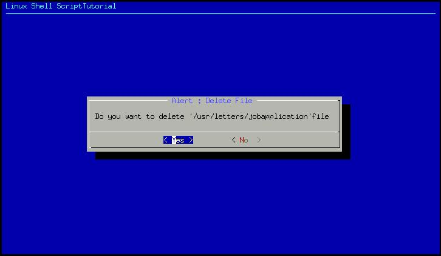

| Linux Shell Scripting Tutorial (LSST) v1.05r3 | ||
| Chapter 4: Advanced Shell Scripting Commands | ||
| | ||
| $ cat > dia3 dialog --title "Alert : Delete File" --backtitle "Linux Shell Script\ Tutorial" --yesno "\nDo you want to delete '/usr/letters/jobapplication'\ file" 7 60 sel=$? case $sel in 0) echo "User select to delete file";; 1) echo "User select not to delete file";; 255) echo "Canceled by user by pressing [ESC] key";; esac |
Save the script and run it as:
$ chmod +x dia3
$ ./dia3

Above script creates yesno type dialog box, which is used to ask some questions to the user , and answer to those question either yes or no. After asking question how do we know, whether user has press yes or no button ? The answer is exit status, if user press yes button exit status will be zero, if user press no button exit status will be one and if user press Escape key to cancel dialog box exit status will be one 255. That is what we have tested in our above shell script as
| Statement | Meaning |
| sel=$? | Get exit status of dialog utility |
| case $sel in 0) echo "You select to delete file";; 1) echo "You select not to delete file";; 255) echo "Canceled by you by pressing [Escape] key";; esac | Now take action according to exit status of dialog utility, if exit status is 0 , delete file, if exit status is 1 do not delete file and if exit status is 255, means Escape key is pressed. |
| | ||
| Message Box (msgbox) using dialog utility | Input (inputbox) using dialog utility | |